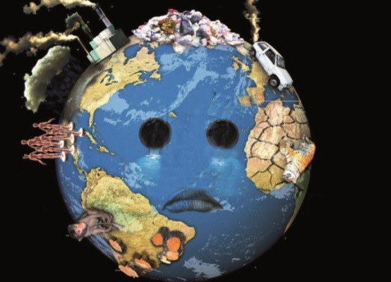

Diariamente en nuestras actividades ya sean de recreación, estudio, trabajo o supervivencia generamos impactos y residuos que contaminan el ambiente.
Unos son el resultado de acciones irresponsables que conducen a la contaminación y otros por acciones que igualmente ponen en riesgo la supervivencia y estas son: Uso irracional del agua y la energía, Tala indiscriminada, explotación indiscriminada de fauna y flora, manejo inadecuado de residuos industriales y domiciliarios, corrupción en el uso y aplicabilidad de la normatividad ambiental para la protección y el adecuado manejo de los recursos naturales.
Esto nos afectan a todos y cada uno de los que lo conformamos (suelo, agua, aire: animales, plantas, personas.) tanto aquí como en cualquier parte del mundo.
Formamos parte de un todo en el cual nos beneficiamos los unos de los otros a través de un sin número de interrelaciones presentes como eslabones en una cadena en la cual lo que afecte a uno de una forma u otra afectara al otro.
Hoy en día se pueden apreciar las consecuencias de actividades humanas inconscientes que han ocasionado cambios en el ambiente y con ello afectaciones directas e indirectas a la vida diaria las cuales si no controlamos van en aumento.
Contaminamos el agua, el suelo, con depósitos de basuras Pesticidas, desechos químicos, biológicos, metales pesados, residuos radiactivos, industriales, domiciliarios; contaminamos el aire con las emisiones de gases industriales, automotores, domiciliarios; talamos los árboles, afectamos directamente a los animales extrayéndolos de su medio e indirectamente modificando y contaminando su hábitat, o introduciendo animales y plantas en un medio ajeno al propio sin prever las consecuencias y las alteraciones del equilibrio del ecosistema, de igual forma en las producción animal irracional en la que no se tiene en cuenta el bienestar animal o la importancia del adecuado manejo de los residuos que de esta se generan.
Las consecuencias cada día son más evidentes: en el calentamiento global, el cambio climático, la extinción de las especies sin imaginar su papel importante en los ecosistemas, el aumento de las enfermedades en las personas, los cambios en la calidad del agua y del suelo, la modificación genética de las especies, el deterioro de la calidad del aire, la lluvia ácida, las afectaciones a la flora, el deshielo, afectaciones a la capa de ozono, las inundaciones…
Aun así muchos piensan: “eso no es conmigo” y demuestran su indiferencia ante este importante tema, Otros causan afectaciones pero solo ven a los que no hacen nada y se suman a ellos para no hacer nada. Afortunadamente existen personas y grupos que están en la lucha para conservar lo que aún queda y a esos son los que hay que seguir, imitar, mejorar y apoyar.
Tenemos la responsabilidad en realizar un adecuado manejo de los recursos naturales que diariamente administramos, es un compromiso principalmente con todos los seres vivos y especialmente con las generaciones futuras de realizar acciones que contribuyan a la conservación y mantenimiento del medio ambiente; estas acciones deben ir encaminadas a prevenir, mitigar, conservar, remediar, corregir, compensar los impactos ambientales direccionando nuestras acciones hacia un desarrollo sostenible que nos garantice el equilibrio.
El cambio depende de todos y está en nuestra voluntad poder lograrlo, y lo más importante es que nunca es tarde para empezar a cambiar y sumarte a quienes estamos en la lucha.
